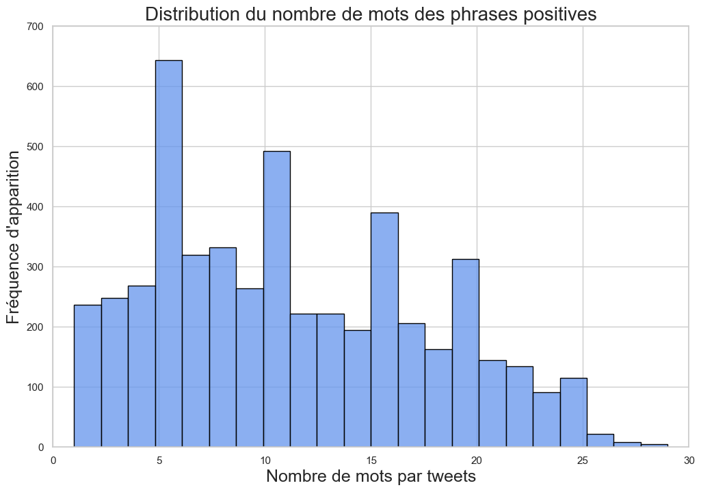
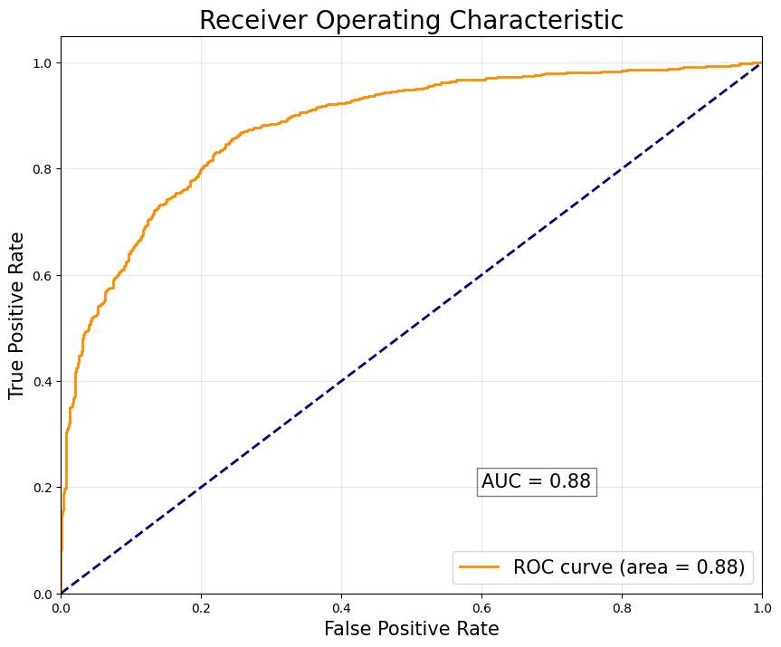

Bienvenue dans le tableau de bord
Ce tableau de bord à pour objectif de permettre à un public non averti de comprendre notre preuve de concept du modèle roBERTa.
"roBERTa est un modèle de langage naturel développé par Facebook AI, basé sur l'architecture transformer. Il est conçu pour améliorer la performance du modèle BERT en utilisant une formation plus poussée et des techniques d'optimisation supplémentaires, telles que l'exclusion de la prédiction de masque et l'entraînement sur des données supplémentaires non étiquetées."
..mais d'abord, un exemple de prédiction de notre modèle entraîné : roBERTa
Le dataset choisi pour réaliser notre travail de veille afin de trouver une méthode récente afin d’améliorer la performance d’un modèle est le fichier Sentiment140, un dataset de 1.6millions de tweet en anglais extrait de l’api de twitter durant la période du 17 Avril 2009 au 27 Mai 2009, lorsqu’elle était encore disponible. Les tweets ont été annoté (0 = négatif, 4 = positif) et peuvent être utilisé pour prédire le sentiment du tweet.
Le DataFrame est caractérisé par 6 variables :
Un travail de pré-traitement à été effectué sur les données textuelles pour simplifier la compréhension de ces données, notamment la suppression des noms d’utilisateurs, des liens, des caractères numériques, etc.
L’objectif de cette entrainement est d’obtenir un modèle capable de prédire le sentiment positif ou négatif d’un tweet à partir de leur contenu textuel.
- target: le sentiment du tweet
- id: identifiant du tweet
- date: date du tweet
- flag: La requête (LyX). Si il n'y a pas de requête alors la valeur sera NO_QUERY
- user: l'utilisateur qui a tweeté
- text: le texte du tweet (avecLyX)
Un travail de pré-traitement à été effectué sur les données textuelles pour simplifier la compréhension de ces données, notamment la suppression des noms d’utilisateurs, des liens, des caractères numériques, etc.
L’objectif de cette entrainement est d’obtenir un modèle capable de prédire le sentiment positif ou négatif d’un tweet à partir de leur contenu textuel.
Pour faciliter la compréhension du dataset, nous avons réalisé plusieurs visualisations graphiques permettant aux utilisateurs de contextualiser les données qui ont permis d'entraîner les différents modèles afin d'évaluer leurs performances.
Voici différents nuages de mot permettant de visualiser le sentiment des tweets selon leur label positif ou négatif.

Voici différents nuages de mot permettant de visualiser le sentiment des tweets selon leur label positif ou négatif.
Pour faciliter la compréhension du dataset, nous avons réalisé plusieurs visualisations graphiques permettant aux utilisateurs de contextualiser les données qui ont permis d'entraîner les différents modèles afin d'évaluer leurs performances.
Voici différentes visualisation de la distribution du nombre de mots par tweet selon leur label positif ou négatif.
Voici différentes visualisation de la distribution du nombre de mots par tweet selon leur label positif ou négatif.

RoBERTa n’est qu’une amélioration, une optimisation bien senti du modèle de base BERT. Il en reprend son nom, mais également toute son architecture. Il convient alors pour bien comprendre le fonctionnement du modèle roBERTa, de bien comprendre en amont le modèle BERT.
BERT est basé sur une architecture de réseau de neurones Transformer, une architecture introduite par Google (Vaswani et al. NeurIPS 2017) dans la publication « Attention Is All You Need ». Cette architecture est construite sur la base de différents couches d’attention.
BERT est entraîné sur des larges jeux de données textuelles non étiquetés notamment des livres non-publiés, des pages de Wikipédia ou d’autres sites internet.
Durant son entrainement, BERT transforme les mots en token sur lesquels il applique une travail de compréhension pour ensuite les transmettre aux différentes couches du réseau de neurones par des représentations vectorielles. Dans ces différentes couches d’attention, BERT tente de comprendre le contexte de chaque mot en les analysant dans leur environnement. Il utilise pour cela une méthode de masquage statique (Masked Language Model), pour masquer certains mots, puis essaie de les prédire en se basant sur le contexte des autres mots dans la phrase. BERT utilise également une méthode de masquage de phrase suivante (Next Sentence Prediction) pour tenter de déterminer si une phrase en suit une autre dans un texte.
De cette manière, BERT arrive à capturer les relations et dépendances entre les mots à long terme dans un texte le tout de manière parallèle.
La principale caractéristique concernant roBERTa est son optimisation, il en tire d’ailleurs son nom, robustly optimized BERT approach.
Nombreux sont les modèles LLMs qui permettent de réaliser différentes analyses sur des données textuelles et d’obtenir des résultats de performances extrêmement intéressants et encourageants, BERT en fait parti.
L’élaboration du modèle roBERTa survient dans les faiblesses du modèle BERT.
En effet le modèle BERT a été entraîné sur un jeu de données relativement restreint (16gGB de texte), et son hyper-paramétrage n’a pas forcément bien été évalué pour maximiser ses performances.
RoBERTa propose de pallier à ces lacunes en entraînant le modèle plus longtemps, avec des lots de données plus important et également sur beaucoup plus de données.
BERT utilise une tâche d'apprentissage appelée "Next Sentence Prediction" (NSP) pour son entraînement. RoBERTa ne prend pas en compte cette tâche afin d’améliorer les performances d’apprentissage, en assimilant plus facilement les relations entre les mots et les phrases.
Enfin, BERT, utilise une méthode de masquage statique (MLM), les mêmes tokens sont masqués à chaque itération. RoBERTa utilise une technique appelée "dynamic masking» qui comme son nom l’indique, modifie dynamiquement les masques d’apprentissages à chaque itération du modèle pour lui permettre de mieux généraliser ses prédictions.
RoBERTa représente une évolution signification de BERT, tirant parti de son architecture de base tout en introduisant des optimisations essentielles ce qui nous permettra d’améliorer notre travail de classification de sentiments sur le dataset de tweets.
BERT est basé sur une architecture de réseau de neurones Transformer, une architecture introduite par Google (Vaswani et al. NeurIPS 2017) dans la publication « Attention Is All You Need ». Cette architecture est construite sur la base de différents couches d’attention.
BERT est entraîné sur des larges jeux de données textuelles non étiquetés notamment des livres non-publiés, des pages de Wikipédia ou d’autres sites internet.
Durant son entrainement, BERT transforme les mots en token sur lesquels il applique une travail de compréhension pour ensuite les transmettre aux différentes couches du réseau de neurones par des représentations vectorielles. Dans ces différentes couches d’attention, BERT tente de comprendre le contexte de chaque mot en les analysant dans leur environnement. Il utilise pour cela une méthode de masquage statique (Masked Language Model), pour masquer certains mots, puis essaie de les prédire en se basant sur le contexte des autres mots dans la phrase. BERT utilise également une méthode de masquage de phrase suivante (Next Sentence Prediction) pour tenter de déterminer si une phrase en suit une autre dans un texte.
De cette manière, BERT arrive à capturer les relations et dépendances entre les mots à long terme dans un texte le tout de manière parallèle.
La principale caractéristique concernant roBERTa est son optimisation, il en tire d’ailleurs son nom, robustly optimized BERT approach.
Nombreux sont les modèles LLMs qui permettent de réaliser différentes analyses sur des données textuelles et d’obtenir des résultats de performances extrêmement intéressants et encourageants, BERT en fait parti.
L’élaboration du modèle roBERTa survient dans les faiblesses du modèle BERT.
En effet le modèle BERT a été entraîné sur un jeu de données relativement restreint (16gGB de texte), et son hyper-paramétrage n’a pas forcément bien été évalué pour maximiser ses performances.
RoBERTa propose de pallier à ces lacunes en entraînant le modèle plus longtemps, avec des lots de données plus important et également sur beaucoup plus de données.
BERT utilise une tâche d'apprentissage appelée "Next Sentence Prediction" (NSP) pour son entraînement. RoBERTa ne prend pas en compte cette tâche afin d’améliorer les performances d’apprentissage, en assimilant plus facilement les relations entre les mots et les phrases.
Enfin, BERT, utilise une méthode de masquage statique (MLM), les mêmes tokens sont masqués à chaque itération. RoBERTa utilise une technique appelée "dynamic masking» qui comme son nom l’indique, modifie dynamiquement les masques d’apprentissages à chaque itération du modèle pour lui permettre de mieux généraliser ses prédictions.
RoBERTa représente une évolution signification de BERT, tirant parti de son architecture de base tout en introduisant des optimisations essentielles ce qui nous permettra d’améliorer notre travail de classification de sentiments sur le dataset de tweets.
RoBERTa est un langage pré-entraîné qui reprend l’architecture du modèle BERT auquel il apporte différentes améliorations et optimisations pour parvenir à de meilleurs résultats.
RoBERTa a donc été entrainé différemment de BERT, en utilisant une tâche d'apprentissage automatique appelée Masked Language Model (MLM), en supprimant la méthode de masquage de phrase suivante (Next Sentence Prediction) et enfin, en multipliant par 10 les données de son entraînement.
La possibilité de ré-entrainement sur nos propres données du modèle BERT et roBERTa nous permettra de tester par nous même l’évolution de performance des différents modèles.
Dans l’étude sur laquelle nous nous appuyons, la méthode d’évaluation du modèle a été effectué grâce à 3 exercices d’évaluations différents, The General Language Understanding Evaluation (GLUE), The Stanford Question Answering Dataset (SQuAD), et enfin The ReAding Comprehension from Ex-aminations (RACE).
Notre méthode d’évaluation ne se fera pas sur des exercices de classification de modèles, mais sur des métriques sélectionnées en fonction de la problématique sur laquelle nous entrainerons les modèles à savoir, la classification de sentiments binaire.
Pour cela nous utiliserons différentes métriques :
Nous avons réalisé différents nettoyage du jeu de donnée pour simplifier la compréhension de l’interprétation du sentiment binaire des tweets, a savoir :
RoBERTa a donc été entrainé différemment de BERT, en utilisant une tâche d'apprentissage automatique appelée Masked Language Model (MLM), en supprimant la méthode de masquage de phrase suivante (Next Sentence Prediction) et enfin, en multipliant par 10 les données de son entraînement.
La possibilité de ré-entrainement sur nos propres données du modèle BERT et roBERTa nous permettra de tester par nous même l’évolution de performance des différents modèles.
Dans l’étude sur laquelle nous nous appuyons, la méthode d’évaluation du modèle a été effectué grâce à 3 exercices d’évaluations différents, The General Language Understanding Evaluation (GLUE), The Stanford Question Answering Dataset (SQuAD), et enfin The ReAding Comprehension from Ex-aminations (RACE).
Notre méthode d’évaluation ne se fera pas sur des exercices de classification de modèles, mais sur des métriques sélectionnées en fonction de la problématique sur laquelle nous entrainerons les modèles à savoir, la classification de sentiments binaire.
Pour cela nous utiliserons différentes métriques :
- le F1 Score : mesure de précision d'un modèle de classification binaire, elle est calculé en prenant la moyenne harmonique de la précision et du rappel.
- la courbe ROC : graphique utilisé pour évaluer la performance d'un modèle de classification binaire
Nous avons réalisé différents nettoyage du jeu de donnée pour simplifier la compréhension de l’interprétation du sentiment binaire des tweets, a savoir :
- la suppression des identifiants d’utilisateurs
- la suppression des liens internet
- la suppression des caractères qui ne sont pas alphanumériques
- la suppression des mots composés d’un seul caractère (utilisé pour les smiley)
- la suppression des caractères numériques
- la conversion de tous les caractères en minuscule
- la lemmatization (trouver la racine) de tous les verbes et adjectifs
- la suppression de tous les stop-words (mot récurent n’apportant pas d’information supplémentaire à la compréhension).
Il est désormais temps de présenter la performance des différents modèles.
Grâce à notre utilisation de Mlflow Tracking et des différentes métriques sélectionnés nous avons des résultats à étudier et commenter.
Le F1 score combine à la fois la précision (capacité du modèle à ne pas classer à tort un exemple positif comme négatif) et le rappel (capacité du modèle à identifier tous les exemples positifs).
Une valeur de F1 score proche de 1 indique un modèle très performant, tandis qu'une valeur proche de 0 indique une performance médiocre.
Nous pouvons constater que le modèle roBERTa obtiens un meilleur score 0.89 que le modèle BERT 0.81.
En effet, grâce à son entraînement sur de plus large jeu de données et de plus nombreuses séquences d’itération roBERTa réussi à capturer des informations contextuelles plus fines et donc permettre une meilleure classification de sentiments sur des données textuelles.
Quant à la courbe ROC (Receiver Operating Characteristic), c’est un outil visuelle permettant d’évaluer la performance d’un classification binaire. En effet, elle fait apparaître le taux de vrais positifs en fonction du taux de faux positifs. Nous pouvons résumer la performance de nos modèles en mesurant l’air sous la courbe ROC. Une valeur de 1 aura pour signification un modèle qui ne fait jamais d’erreur.
Ici, les valeurs pour nos différents modèles sont respectivement de 0.91 pour roBERTa et 0.88 pour BERT.
En conclusion, les résultats indiquent que roBERTa surpasse BERT en termes de performance, comme en témoigne son F1 Score et AUC plus élevés. Cependant, le choix entre ces deux modèles devrait également prendre en considération des facteurs tels que la disponibilité des ressources de calculs et les exigences spécifiques de la tâche à accomplir.
Grâce à notre utilisation de Mlflow Tracking et des différentes métriques sélectionnés nous avons des résultats à étudier et commenter.
Le F1 score combine à la fois la précision (capacité du modèle à ne pas classer à tort un exemple positif comme négatif) et le rappel (capacité du modèle à identifier tous les exemples positifs).
Une valeur de F1 score proche de 1 indique un modèle très performant, tandis qu'une valeur proche de 0 indique une performance médiocre.
Nous pouvons constater que le modèle roBERTa obtiens un meilleur score 0.89 que le modèle BERT 0.81.
En effet, grâce à son entraînement sur de plus large jeu de données et de plus nombreuses séquences d’itération roBERTa réussi à capturer des informations contextuelles plus fines et donc permettre une meilleure classification de sentiments sur des données textuelles.
Quant à la courbe ROC (Receiver Operating Characteristic), c’est un outil visuelle permettant d’évaluer la performance d’un classification binaire. En effet, elle fait apparaître le taux de vrais positifs en fonction du taux de faux positifs. Nous pouvons résumer la performance de nos modèles en mesurant l’air sous la courbe ROC. Une valeur de 1 aura pour signification un modèle qui ne fait jamais d’erreur.
Ici, les valeurs pour nos différents modèles sont respectivement de 0.91 pour roBERTa et 0.88 pour BERT.
En conclusion, les résultats indiquent que roBERTa surpasse BERT en termes de performance, comme en témoigne son F1 Score et AUC plus élevés. Cependant, le choix entre ces deux modèles devrait également prendre en considération des facteurs tels que la disponibilité des ressources de calculs et les exigences spécifiques de la tâche à accomplir.
La courbe ROC (Receiver Operating Characteristic) est un graphique qui illustre la performance d'un modèle de classification binaire à différents seuils de décision.
Sur l'axe des x, elle représente le taux de faux positifs (1 - spécificité), tandis que sur l'axe des y, elle représente le taux de vrais positifs (sensibilité).
Plus la courbe ROC est proche du coin supérieur gauche, meilleure est la performance du modèle.
Voici les graphiques permettant de visualiser la performance des différents modèles.
Sur l'axe des x, elle représente le taux de faux positifs (1 - spécificité), tandis que sur l'axe des y, elle représente le taux de vrais positifs (sensibilité).
Plus la courbe ROC est proche du coin supérieur gauche, meilleure est la performance du modèle.
Voici les graphiques permettant de visualiser la performance des différents modèles.
